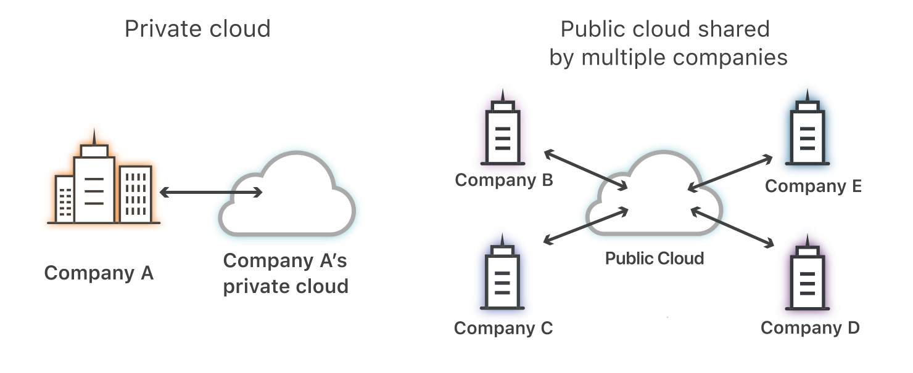
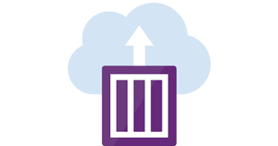
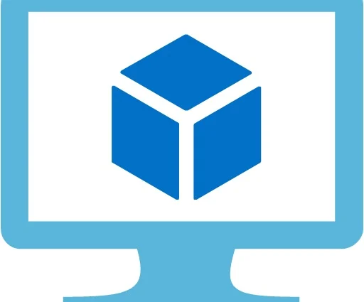
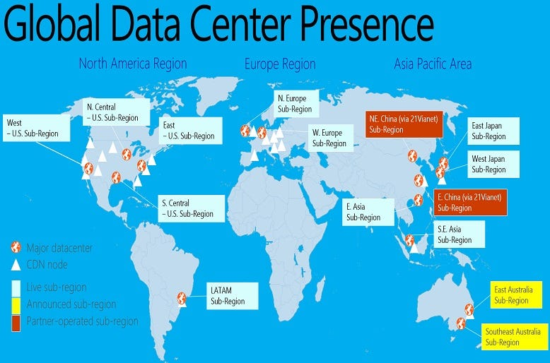

Equipo patata presenta...
Certificaciones Azure


Certificacion Azure AZ-900

Descripción de la informatica en la nube
Definicion de informatica en la nube
La informatica en la nube es la prestacion de servicios informaticos (software, base de datos, servidores y conexiones a red), a traves de internet. Esto significa que los usuarios finales pueden acceder a software y aplicaciones desde cualquier punto donde se encuentren.
Descripcion del modelo de responsabilidad compartida
El modelo de responsabilidad compartida son las preocupaciones de seguridad que enfrenta el proveedor independientemente del modelo de servicio y las preocupaciones de seguridad que enfrenta el cliente que utiliza el servicio en la nube La seguridad de la nube es responsabilidad del CSP, y la seguridad en la nube es de los clientes
Definición de modelos de nube, incluidos públicos, privados e híbridos
Un modelo de implementacion en la nube es una “configuracion” de los parametros del entorno de la nube, como el tamaño de almacenamiento, la accesibilidad y el propietario.
Existen tres modelos principales:
- Nube pública
- La nube publica esta disponible para todo el mundo y los datos se almacenan en servidores de terceros como podria ser los servidores de Azure
- Una ventaja podria ser que los clientes no compran su propio hardware (servidores)
- Una desventaja es que los datos se almacenan en servidores externos y no sabemos donde se guardan los datos y quien tiene acceso a ellos.
- Nube privada
- La nube privada solo esta disponible para una empresa, los datos se almacenan dentro del firewall
- Una ventaja es que solo un conjunto de personas tienen el permiso para acceder a los datos
- Nube hibrida
- La nube hibrida utiliza las nubes privadas para almacenar los datos mas sensibles y nubes publicas para las menos sensibles
- Este modelo solo lo implementan las compañias que suelen dividir sus datos
- 
Identificación de los casos de uso adecuados para cada modelo de nube
- Las nubes publicas:
- Aplicaciones web, sitios estaticos, desarrollo y pruebas, big data y analisis, aplicaciones de IoT
- ofrece escalabilidad y recursos compartidos
- Las nubes privadas:
- Industrias reguladas, cargas de trabajo críticas, seguridad sensible y aplicaciones personalizadas o heredadas
- Proporciona mayor control y seguridad
- Las nubes híbridas:
- Útil para cargas de trabajo con escalabilidad variable, recuperación ante desastres, seguridad y aplicaciones que requieren baja latencia
- Combina las caracteristicas de las nubes publicas y privadas
Descripción del modelo basado en el consumo
El modelo basado en el consumo es un enfoque en el cual los recursos informaticos se utilizan según la demanda y se pagan en funcion del uso.
En lugar de pagar por recursos fijos o capacidades preestablecidas, los clientes pagan solo por los recursos que realmente consumen.
Comparación de los modelos de precios en la nube
| Servicio/Proveedor | AWS | Azure | GCP |
|---|---|---|---|
Computación (VM) |
|||
| Instancia EC2 (por hora) | Desde $0.01 | Desde $0.008 | Desde $0.006 |
Almacenamiento |
|||
| Almacenamiento S3 (por GB/mes) | Alrededor de $0.023 | Alrededor de $0.0185 | Alrededor de $0.2 |
| Almacenamiento de Blobs (por GB/mes) | Alrededor de $0.03 | Alrededor de $0.03 | Alrededor de $0.026 |
Descripción de la informática sin servidor (FaaS)
Se trata de un modelo de desarrollo directamente en la nube sin la necesidad de gestionar servidores.
En lugar de tener que gestionar servidores todo el tiempo, escriben funciones que se ejecutan solo cuando se necesitan, en respuesta a eventos específicos.
Las funciones se ejecutan en respuesta a eventos como solicitudes web o cambios en la base de datos.
Descripción de las ventajas de usar servicios en la nube -900
- Descripción de las ventajas de la alta disponibilidad y la escalabilidad en la nube
- Descripción de las ventajas de la confiabilidad y la previsibilidad en la nube
- Descripción de las ventajas de la seguridad y la gobernanza en la nube
- Descripción de las ventajas de la capacidad de administración en la nube
Descripción de las ventajas de la alta disponibilidad y la escalabilidad en la nube
La alta disponibilidad es la capacidad de un sistema para estar continuamente funcionando durante un período largo o permamanente donde se garantiza al 99%.

La escalabilidad permite tener una cantidad de espacio suficiente para no tener que preocuparnos .
Descripción de las ventajas de la confiabilidad y la previsibilidad en la nube
La confiabilidad es lo que permite darnos la seguridad ante un possible error u otro tipo de acciones al 99%.
La previsibilidad se centra darnos una experiencia positiva.

Descripción de las ventajas de la seguridad y la gobernanza en la nube
La seguridad en la nube tiene el fin de garantizar la protección de los datos.

La gobernanza de la nube es un conjunto de reglas, procesos e informes que guían a su organización a seguir las prácticas recomendadas.
Descripción de las ventajas de la capacidad de administración en la nube
La capacidad en la nube es la cantidad de espacio que se nos otorga y tenemos como ventaja:
Copias de seguridad.
Seguridad y respaldo de datos.
Reducción de costos operativos.
Flexibilidad en precios y escalabilidad.
Usabilidad y accesibilidad.
Simplifica el trabajo remoto.
Múltiples usuarios.
La administración en la nube es un proceso de mantener el control de la infraestructura, los recursos y los servicios de computación en la nube en entornos de nube.
Descripción de los tipos de servicio en la nube
- Descripción de la infraestructura como servicio (Iaas)
- Descripción de la plataforma como servicio (PaaS)
- Descripción del software como servicio (SaaS)

Descripción de la infraestructura como servicio (Iaas)
Consiste en alquilar servicios de infraestructura en la nube como servicios individuales de un proveedor de servicios en la nube, incluidos servidores, máquinas virtuales, recursos de redes y almacenamiento.
Un ejemplo claro que tenemos es Pc componentes.

Descripción de la plataforma como servicio (PaaS)
Consiste es un entorno en la nube integral que incluye todo lo que los desarrolladores necesitan para crear, ejecutar y gestionar aplicaciones, desde servidores y sistemas operativos hasta redes, almacenamiento, middleware, herramientas y más.
Un ejemplo claro que tenemos es Google Workspace , basicamente pagamos por una plataforma que contiene ciertas aplicaciones como el drive o el correo electronico y otras herramientas de colaboración.
Otro ejemplo claro que tenemos es Microsoft Azure App Service , basicamente tambien pagamos por una plataforma que nos aporta crear y alojar aplicaciones web, back-ends móviles y API RESTful en el lenguaje de programación que sea sin tener que administrar la infraestructura.
Descripción del software como servicio (SaaS)
Es un modelo de software basado en la nube que ofrece aplicaciones a los usuarios finales a través de un navegador de Internet.
Un ejemplo claro que tenemos es netflix, basicamente lo que se hace es alquilar mensualmente o anuealmente un software a provedores de servicios externos.

Otro ejemplo claro que tenemos es Dazn, basicamente lo que se hace es alquilar mensualmente o anuealmente un software a provedores de servicios externos.
Descripción de los principales componentes arquitectónicos de Azure
- Describir las regiones de Azure, los pares de regiones y las regiones soberanas
- Describir las zonas de disponibilidad
- Describir los centros de datos de Azure
- Descripción de los recursos y grupos de recursos de Azure
- Describir las suscripciones
- Describir los grupos de administración
Describir las regiones de Azure, los pares de regiones y las regiones soberanas
Hay muchas regiones en todos los continentes que proporcionan alta disponibilidad para proteger las aplicaciones y los datos frente a errores del centro de datos.

Las regiones soberanas son Azure China 21Vianet y Azure Government - EE. UU.
Describir las zonas de disponibilidad
Las zonas de disponibilidad son grupos separados de centros de datos dentro de una región. Las zonas de disponibilidad están lo suficientemente cerca para tener conexiones de baja latencia a otras zonas de disponibilidad.
Describir los centros de datos de Azure
Un centro de datos de Azure basicamente es un edificio muy grande en el que se encuentran ubicados los equipos informáticos necesarios para procesar y almacenar toda la información de un negocio.

Descripción de los recursos y grupos de recursos de Azure
Los recursos son elementos administrables que están disponibles a través de Azure.
Un grupo de recursos es un contenedor que almacena los recursos relacionados con una solución de Azure.

Describir las suscripciones
Las suscripciones de Azure son una agrupación de recursos con un propietario asignado que es responsable de la facturación y de la administración de los permisos.
Describir los grupos de administración
Los grupos de administración son contenedores que ayudan a administran el acceso, las directivas y el cumplimiento de varias suscripciones.

Descripcion de los servicios de proceso y redes de Azure
Comparación de los tipos de proceso, incluidos los contenedores, las máquinas virtuales y las funciones
Máquinas Virtuales (VMs):
Este servicio proporciona maquinas virtuales en la nube
Azure Kubernetes Service (AKS):
Este servicio simplifica la implementacion y administracion de aplicaciones en contenedores
Azure Container Instances (ACI):
Permite ejecutar contenedores sin tener que gestionar la infraestructura subyacente.
- 
Azure App Service:
Proporciona una plataforma completamente administrada para el desarrollo, la implementación y la escalabilidad de aplicaciones web.
Descripción de las opciones de máquina virtual, como Azure Virtual Machines, Azure Virtual Machine Scale Sets, conjuntos de disponibilidad y Azure Virtual Desktop
Azure Virtual Machines (VM):
son máquinas virtuales flexibles que se ejecutan en la nube de Microsoft Azure.
Azure Virtual Machine Scale Sets:
Permite implementar y administrar un conjunto de maquinas virtuales identicas. Estos se escalan automaticamente según la carga de trabajo.
Conjuntos de disponibilidad (Availability Sets):
Estos ayudan a garantizar la alta disponibilidad y la toleranciaa a fallos de las aplicaciones que se ejecutan en las maquinas virtuales: Estan diseñados para distribuir las maquinas de una manera en la que reduzca el riesgo de fallos
Descripción de los recursos necesarios para las máquinas virtuales
Depende del uso al que le vayas a dar a la maquinas virtuales.
Por ejemplo, las MV Serie A las mas usadas son:
| Serie A | Configuración de CPU: | Configuración de Memoria: | Almacenamiento: |
|---|---|---|---|
| Standard_A2 | Núcleos de CPU: 2. | RAM: 4 GB. | Disco Temporal: 20 GB (SSD). |
| Standard_A4 | Núcleos de CPU: 8. | RAM: 14 GB. | Disco Temporal: 40 GB (SSD). |
| Standard_A8 | Núcleos de CPU: 8. | RAM: 56 GB. | Disco Temporal: 160 GB (SSD). |
De las Series B son:
| Serie B | Configuración de CPU: | Configuración de Memoria: | Almacenamiento: |
|---|---|---|---|
| Standard_B2s | Núcleos de CPU: 2. | RAM: 4 GB. | Disco Temporal: 16 GB (SSD). |
| Standard_B4ms | Núcleos de CPU: 4. | RAM: 16 GB. | Disco Temporal: 32 GB (SSD). |
| Standard_B8ms | Núcleos de CPU: 8. | RAM: 32 GB. | Disco Temporal: 64 GB (SSD). |
De las Serie F son:
| Serie F | Configuración de CPU: | Configuración de Memoria: | Almacenamiento: |
|---|---|---|---|
| Standard_F4s | Núcleos de CPU: 4. | RAM: 8 GB. | Disco Temporal: 32 GB (SSD). |
| Standard_F8s | Núcleos de CPU: 8. | RAM: 16 GB. | Disco Temporal: 64 GB (SSD). |
| Standard_F16s | Núcleos de CPU: 16. | RAM: 32 GB. | Disco Temporal: 128 GB (SSD). |
Descripción de las opciones de hospedaje de aplicaciones, incluidas las aplicaciones web, los contenedores y las máquinas virtuales
Azure proporciona diferentes formas de hospedar y ejecutar las aplicaciones en funcion de sus necesidades.
De las que mas se utilizan son:
- Azure App Service
- Azure Functions
- Azure Kubernetes Service (AKS)
- Azure Virtual Machines (VMs)
- Azure Batch
Una opcion de hospedaje que nos deberia ser familiar es: (VMs).
Que son maquinas virtuales en la nube.
- 
Descripción de las redes virtuales, incluido el propósito de Azure Virtual Networks, las subredes virtuales de Azure, el emparejamiento, Azure DNS, VPN Gateway y ExpressRoute
Azure Virtual Networks (Redes Virtuales de Azure):
Es un servicio de azure que permite crear redes privadas en la nube, proporciona aislamiento de recursos, control sobre la conectividad y una extension de la infraestructura de red local a la nube
Subredes virtuales de Azure:
puedes dividir las redes en subredes para organizar y segmentar los recursos dentro de la virtualNet.
Emparejamiento de Red (VNet Peering):
permite conectar dos virtualNets dentro de la misma region de azure, esto facilita la comunicación directa entre recursos de VNets emparejadas ( como si estuviesen en la misma red)
Azure DNS:
Este servicio proporciona nombres de dominio en la nube.
VPN Gateway:
Este servicio permite establecer conexiones seguras y cifradas entre redes locales y redes virtuales de azure
ExpressRoute:
Este servicio permite una conexión desde la infraestructura local hasta Microsoft, para tener una conexion mas rapida, mas fiable y con menor lllatencia en comparacion a el acceso publico a traves de internet
Definir puntos de conexión públicos y privados
Puntos de conexión públicos:
Son como se exponen los servicios y recursos a través de la Internet pública. Los usuarios y aplicaciones pueden acceder a estos servicios utilizando direcciones IP públicas
Ejemlo:
Un sitio web público hospedado en Azure App Service con una dirección URL accesible desde Internet
Puntos de conexión Privados:
Se refiere a la configuración de servicios y recursos para que solo sean accesibles desde redes privadas
Ejemlo:
Una base de datos en Azure configurada con un punto de conexión privado solo accesible desde dentro de una red virtual específica
Descripción de los servicios de almacenamiento de Azure
- Comparación de los servicios de almacenamiento de Azure
- Descripción de los niveles de almacenamiento
- Descripción de las opciones de redundancia
- Descripción de las opciones de la cuenta de almacenamiento y los tipos de almacenamiento
- Identificación de opciones para mover archivos, incluidos AzCopy, Explorador de Azure Storage y Azure File Sync
- Descripción de las opciones de migración, incluidas Azure Migrate y Azure Data Box
Comparación de los servicios de almacenamiento de Azure
Si comparamos los servicios de almacenamiento de Azure por ejemplo con los de AWS básicamente es que Amazon tiene una mayor cuota de mercado en la nube que Azure. AWS ofrece más productos y servicios en la nube que Azure.
Descripción de los niveles de almacenamiento
Los niveles de almacenamiento se usan para que pueda almacenar los datos de blobs de la manera más rentable en función de cómo se usen.
Descripción de las opciones de redundancia
Las opciones de redundancia garantiza que tus datos estarán disponibles incluso durante una interrupción regional.
En caso de interrupción se podra conectar a otra zona cercana.
- 
Descripción de las opciones de la cuenta de almacenamiento y los tipos de almacenamiento
La cuenta de almacenamiento proporciona un espacio de nombres único para los datos de Azure Storage que es accesible desde cualquier lugar del mundo mediante HTTP o HTTPS.
Tipos de almacenamiento:
- Almacenamiento de archivos para acceso distribuido.
- Streaming de audio y vídeo.
- Almacenamiento de datos para copia de seguridad y restauración, recuperación ante desastres y archivado.
- Almacenamiento de datos para el análisis en local o en un servicio hospedado de Azure.
Identificación de opciones para mover archivos, incluidos AzCopy, Explorador de Azure Storage y Azure File Sync
Azure File Sync transforma Windows Server en una caché rápida de los recursos compartidos de archivos de Azure.
Explorador de Azure Storage nos permite buscar cualquier tipo de archivo de azure.
Azure File Sync permite la sincronización de Windows Server con un recurso compartido de archivos de Azure.
Descripción de las opciones de migración, incluidas Azure Migrate y Azure Data Box
La migracion a la nube es el proceso de mover las aplicaciones y los datos desde una ubicación.
Azure Migrate proporciona un centro de conectividad para realizar el seguimiento de la detección, evaluación y migración a Azure de las aplicaciones y cargas de trabajo locales.
Azure Data Box Gateway es una solución de almacenamiento que permite enviar fácilmente datos a Azure.
Certificacion Azure AZ-104
Describir las regiones de Azure, los pares de regiones y las regiones soberanas
¿Qué es y para que sirve?
Este examen mide su capacidad para realizar las siguientes tareas técnicas: administrar las identidades y la gobernanza de Azure; implementar y administrar el almacenamiento; implementar y administrar recursos de proceso de Azure; implementar y administrar redes virtuales; y supervisar y mantener los recursos de Azure.
Administrar usuarios y grupos de Microsoft Entra
- Creación de usuarios y grupos
- Administración de propiedades de usuario y grupo.

- Administrar licencias en Microsoft Entra ID


- Administración de usuarios externos.


- Configuración del autoservicio de restablecimiento de contraseña (SSPR)


En nuestro Azure Active Directory podemos crear, añadir, eliminar y modificar los usuarios o grupos. Por ejemplo, en una empresa cada trabajador tiene su propio usuario y pertenecerá al grupo del departamento en el que trabaja.
El administrador podrá gestionar las propiedades que tendrá de cada grupo o usuarios, por ejemplo asignarle un nombre, contraseña, permisos, capetas compartidas, privilegios, tipos de grupos, etc.
Microsoft Entra ID es un servicio de administración de identidades y acceso basado en la nube que permite a los empleados acceder a recursos externos. Entre los recursos de ejemplo se incluyen Microsoft 365, Azure Portal y miles de otras aplicaciones SaaS.
El administrador puede asignar licencias a un grupo de usuarios que pertenecen a un departamento de una empresa, por ejemplo un grupo de seguridad en el que hay 1000 usuarios y le asigna licencias de Office 365 Enterprise E3 a todo el departamento. Después se debe comprobar en el apartado de licencias que se haya asignado correctamente.
En el caso de que indique en su estado que ha habido un error podemos ver más información la columna asignaciones erróneas. La columna Motivo principal del error contiene la causa del error. Puede que un usuario ya tenga una licencia que le asigna otro grupo al que pertenece y esta nueva licencia que le otorga otro grupo entra en conflicto. Habría que quitarlo del grupo anterior para que Microsoft Entra ID se la asigne correctamente.
La gestión de identidad y acceso (Control de acceso IAM) es un modo de saber quién es un usuario y qué tiene permiso para hacer. El administrador puede ponerle un rol, por ejemplo, de suscriptor a un usuario invitado y le dará los permisos que considere. Como que tenga acceso al un grupo específico.
A través de el email del invitado se le enviará la notificación de la invitación, una vez termine se debe eliminar al usuario invitado de la asignación de roles y de Microsoft Entra ID
SSPR permite a los usuarios restablecer su contraseña de forma segura usando los mismos métodos que usan para la autenticación multifactor de Microsoft Entra sin necesidad de que intervenga el administrador o soporte técnico.
En las propiedades dentro de protección tenemos la opción de restablecimiento de contraseña, si no está visible el grupo que queremos indicamos que “ninguno” y seleccionaremos el grupo de Microsoft Entra, como SSPR-Test-Group.
Luego en métodos de autentificación indicaremos el número de métodos queremos que use. Esta información la puede proporcionar el administrador o el usuario desde el portal de registro.
Administración del acceso de usuarios a los recursos de Azure
- Administración de roles de Azure integrados.

Las asignaciones de roles sirven para controlar el acceso a los recursos de Azure. El control de acceso se basa en el rol de Azure (Azure RBAC) tiene varios roles integrados de Azure que se pueden asignar a usuarios, grupos, entidades de servicio e identidades administradas.
Los roles integrados tienen unos permisos específicos para cada uno de ellos, si no satisfacen las necesidades concretas de la organización se pueden crear roles personalizados de Azure propios. Puede buscar permisos por palabra clave, como permisos de máquina virtual o de facturación. También puede descargar todos los permisos como un archivo CSV y, a continuación, buscar en este archivo.
Administración del acceso de usuarios a los recursos de Azure
- Administración de roles de Azure integrados.
Las asignaciones de roles sirven para controlar el acceso a los recursos de Azure. El control de acceso se basa en el rol de Azure (Azure RBAC) tiene varios roles integrados de Azure que se pueden asignar a usuarios, grupos, entidades de servicio e identidades administradas.

Los roles integrados tienen unos permisos específicos para cada uno de ellos, si no satisfacen las necesidades concretas de la organización se pueden crear roles personalizados de Azure propios.
Puede buscar permisos por palabra clave, como permisos de máquina virtual o de facturación. También puede descargar todos los permisos como un archivo CSV y, a continuación, buscar en este archivo.

- Asignación de roles en distintos ámbitos y Interpretación de las asignaciones de acceso.
Los roles otorgan ciertos permisos, los cuales se pueden aplicar también según un ámbito y no se asigne a todo inquilino. Los recursos a los que se aplica una asignación de funciones también es un ámbito.
- Ámbito Inquilino:
Los permisos o rol para una persona en concreto.
- Ámbito administrativo:
Otorgar un rol a una unidad administrativa, por ejemplo Departamento de soporte técnico.

- Ámbito en la aplicación:
En este caso, hay que buscar la aplicación que deseamos y luego le aplicamos el rol, seleccionando a los usuarios o el grupo a los que se quiera asignar este rol.
Implementación y administración de Azure Policy
Azure Policy es un servicio de microsoft que nos permite administrar políticas de gestión y garantizar que se cumplan. Estas políticas pueden estar referidas a medidas de seguridad o incluso gestión de costes y recursos.
Configuración de bloqueos de recursos
Un administrador puede bloquear un recurso, grupo de recursos o suscripciones para que no puedan ser eliminados o modificados. Esto invalida los permisos que pueda tener un usuario. Esto podemos realizarlo a nivel gráfico añadiendo lo bloqueo a Eliminar y Solo Lectura. Y en línea de comandos se llama CanNotDelete y ReadOnly.
Aplicación y administración de etiquetas en recursos
Las etiquetas son elementos que nos permiten identificar, a modo organizativo, los recursos.
Administración de grupos de recursos
Un grupo de recursos nos permite almacenar de forma relacionada distintos recursos. Estos nos permiten ubicar los recursos en un mismo lugar.

Administración de suscripciones
Las suscripciones permiten administrar y gestionar los servicios utilizados, permitiendo controlar los gastos, gestionar el acceso a los costos, organizar los recursos y mantener las políticas de la empresa, dentro de los límites definidos de facturación.
Planificación para administrar costos de Azure
Para calcular el coste de un servicio Azure podemos utilizar tres herramientas:
- Calculadora de precios de Azure
- Hoja de precios de Azure
- Portal de Azure
Calculadora de precios
Hoja de precios Azure
Portal de Azure
Supervisión de los costos de Azure
Para supervisar los costos podemos utilizar dos herramientas:
- Análisis de costos
- Alertas de presupuesto y de costos
Análisis de costos
Alertas de presupuesto y de costos
Facturación
Grupos de administración de Azure
Los grupos de administración permiten aplicar directivas a un grupo. Estas directivas se aplicarían a las suscripciones y recursos anidados permitiendo únicamente realizar las tareas a los grupos permitidos.
Configuración de redes virtuales y firewalls de Azure Storage
Permite configurar las reglas del firewall en tu cuenta de almacenamiento para permitir o denegar el acceso a determinadas direcciones IP o rangos de direcciones IP. Esto ayuda a asegurar que solo las aplicaciones o servicios específicos tengan acceso a tu almacenamiento.
Creación y uso de tokens de firma de acceso compartido (SAS)
Los tokens de firma de acceso compartido son una forma segura de proporcionar acceso limitado y temporal a recursos de almacenamiento. Puedes generar SAS tokens para los servicios de almacenamiento y especificar permisos, duración y condiciones de acceso.
Configuración de las directivas de acceso almacenadas
Permite utilizar directivas de acceso almacenadas para definir reglas de acceso que se aplican a todos tus contenedores o recursos de almacenamiento. Esto facilita la gestión de permisos y la implementación consistente de políticas de seguridad.
Administración de las claves de acceso
Una cuenta de Azure Storage usa como credenciales un nombre de cuenta y una clave. La clave se genera automáticamente y actúa como una contraseña y no como una clave criptográfica. Key Vault se utiliza para administrar las claves de la cuenta de almacenamiento, las regenera periódicamente en una cuenta de almacenamiento y proporciona tokens de firma de acceso compartido para el acceso delegado a los recursos de la cuenta de almacenamiento.
Configuración del acceso basado en identidad para Azure Files
El acceso basado en identidad para Azure Files es la capacidad de controlar y administrar el acceso a los archivos almacenados en Azure Files utilizando identidades de Azure Active Directory. Esto permite una gestión más segura y centralizada de los permisos de acceso.